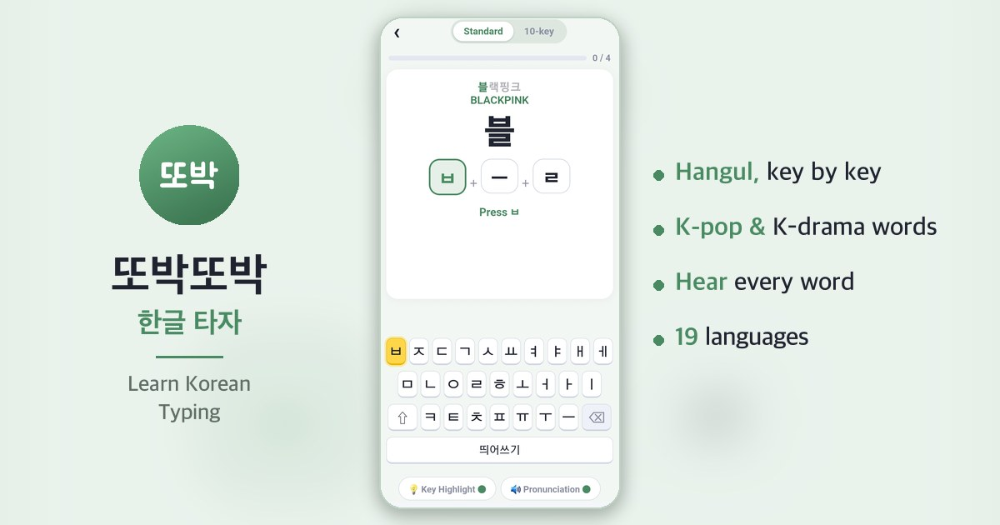

Learn Korean Typing
또박또박 · Learn slowly, step by step
- Type Hangul key by key — the next key lights up
- Big letters, key highlights, every word spoken aloud
- K-pop & K-drama words, short sentences, typing games
- Standard & 10-key keyboards · 19 languages